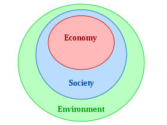
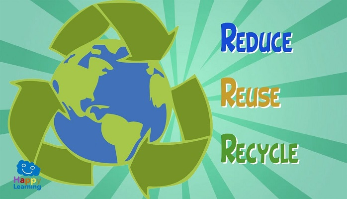

Fun fact...
It takes around 2,700 litres of water to make a single cotton t-shirt

Did you know that...
Recycling a single 330 ml aluminium drink can save enought energy to power a tv for over 3 hours

Keep in mind that...
Reduce carbon footprints.